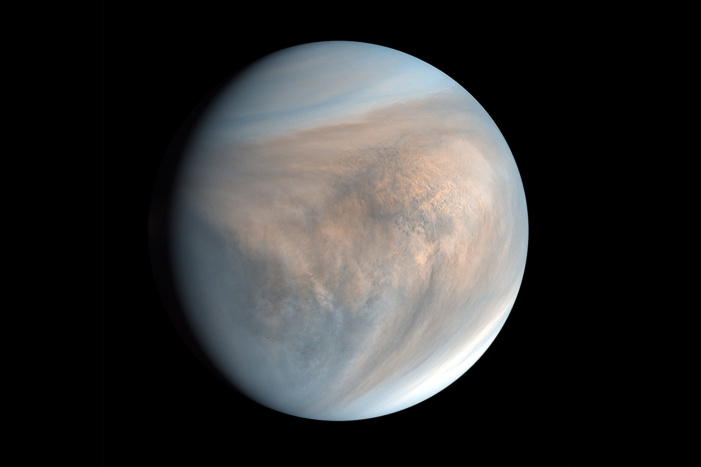
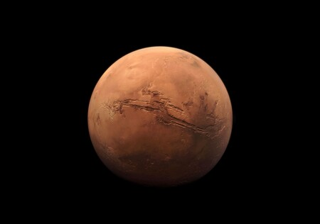

P L A N E T A S | T E R R E S T R E S
Los Planetas Terrestres son los cuatro mas internos en el Sistema Solar, Mercurio, Venus , Tierra y Marte. Éstos son llamados terrestres porque tienen una superficie rocosa compacta, como la de la Tierra. Los planetas, Venus, Tierra, y Marte tienen atmósferas significantes mientras que Mercurio casi no tiene. El diagrama siguiente muestra la distancia aproximada de los planetas terrestres al Sol.
Un planeta terrestre, también denominado planeta telúrico o planeta rocoso, es un planeta formado principalmente por silicatos. Los planetas terrestres son sustancialmente diferentes de los planetas gigantes gaseosos, los cuales puede que no tengan una superficie sólida y están constituidos principalmente por gases tales como hidrógeno, helio y agua en diversos estados de agregación. Todos los planetas terrestres tienen aproximadamente la misma estructura: un núcleo metálico, mayoritariamente férreo, y un manto de silicatos que lo rodea. La Luna tiene una composición similar, excepto el núcleo de hierro. Los planetas terrestres tienen cañones, cráteres, montañas y volcanes. Además tienen atmósferas secundarias, procedentes de sus procesos geológicos internos, al contrario que los gigantes gaseosos que poseen atmósferas primarias, capturadas directamente de la nebulosa solar original. El Sistema Solar tiene cuatro planetas terrestres: Mercurio, Venus, La Tierra y Marte, y un planeta enano en el Cinturón de asteroides, Ceres, llamados conjuntamente planetas interiores. Los objetos transneptunianos como Plutón se parecen a los planetas terrestres en que tienen una superficie sólida, pero son mayoritariamente hielo. Algunas grandes lunas del Sistema Solar también son desde cierto punto de vista planetas telúricos ya que se consideran planetas secundarios de formaciones rocosas, pero no todas las lunas, sólo aquellas lo suficientemente grandes como para alcanzar equilibrio hidrostático. Durante la formación del Sistema Solar, probablemente hubo más planetas terrestres (protoplanetas), pero se fusionaron para formar los actuales planetas, fueron destruidos o expulsados hacia el espacio interestelar mediante alteraciones gravitacionales del resto de planetas. Sólo un planeta terrestre, la Tierra, tiene una hidrosfera activa.
- M E R C U R I O
Mercurio es el planeta del sistema solar más cercano al Sol y el más pequeño.

- V E N U S
Venus es el segundo planeta del sistema solar en orden de proximidad al Sol y el tercero en cuanto a tamaño en orden ascendente después de Mercurio y Marte.
 - LA - T I E R R A
La Tierra es el planeta mayor de los cuatro terrestres o rocosos.

- M A R T E
Marte es el cuarto planeta en orden de distancia al Sol y el segundo más pequeño del sistema solar, después de Mercurio.
